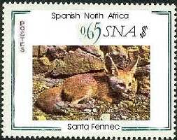
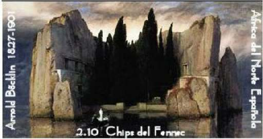

|
Q & A About SNA
An imaginary interview with real people
about the problems, but also the light side of stamp collecting
Q. Is SNA just another country that
issues stamps?
A. SNA isn't just an unknown country, it's rather a
philatelic movement and an art of thinking.
Q. How and why did it appear?
A. The movement appeared rather spontaneously in the summer of the year 2000
on the Usenet newsgroup rec.collecting.stamps.discuss. The number of
participants was small, the discussions not very challenging, and for this
reason some participants invented step by step a new country, the Spanish
North Africa.
Q. What makes this country so
different?
A. Firstly, it has a rather virtual existence, so it had to be created as much
geographically, as philatelically. And it has some important, even unique
goals.

Q. Which ones?
A. For many years the stamp collecting is literally invaded by philatelic
"super productions", many of them coming from countries that have
a totally unreasonable politics. That's why SNA became the embodiment of all
these kind of countries, postal administrations and unscrupulous dealers.
Q. Could you give us some examples of
such SNA issues?
A. No problem. Let's take as example the following devilish linkage of
SNA findings (most of them not issued yet):
-
Misses of the World. All Miss
World from 1950 to 2000 (51 stamps only)
-
101 Dalmatians. A stamp for each
dog, plus some sheets, of course
-
1001 Nights. You can guess the
consequences for collectors pockets.
Q. And what about imperforates,
limited issues, huge quantities, holograms, etc.?
A. SNA has most of them, and even more. Many SNA issues appeared on special
materials, with selected smells, in unusual forms, or very personalized, so that
the PA's worldwide were slowly reduced to the status of followers, instead of leaders in
the domain of the so called innovation.
Q. Do you treat serious subjects on SNA issues too?
A. Yes, from time to time. For example we promote some
art on stamps that we like. These can be either antiques works or modern
paintings, created by talented RCSD participants. We are also sensitive to
world's events and react to them by our own sensibility and emotions. In the
process of designing stamps, we have the direct opportunity to learn, and to be
confronted with the problems that the professional stamp designers
experience too. This helps us to get a better understanding of this interesting
specialty.
Q. Have you also other reasons for the
promotion of SNA?
A. Of course, several. The main reason is that we have a lot of pleasure
with this subject. We try to imagine the most terrible/horrible/incredible
things, to design new stamps, to make them credible or laughable, depending
on the subject that we treat.

Q. Who are the eSNAtors?
A. Stamp collectors with imagination, common sense and last not least a
certain sense of humor. All of them are very active in one philatelic field or
in another. They founded stamp clubs on Internet, created interesting sites,
picked up stamps for being sent to beginners, answered numberless questions
of philatelic newsgroups, fought illegal issues, etc.
Q. How can we find more about SNA?
A. By often visiting this site and by at least lurking on the RCSD
newsgroup.
Thanks for the interview.
Credit: M. Pierre Courtiade, France (the fennec stamp).
|